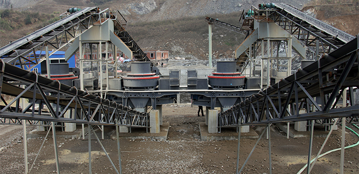

Sand Making Machine Type and Structure Details
In the field of artificial sand river pebbles, rocks, ore tailings, stone chips, sand making machine is the most widely used devices. sand making machine is suitable for crushing soft or medium hard and extremely hard materials, plastic. Silicon carbide, silicon carbide, sintered bauxite, the US high sand hard, special hard and abrasion resistance material is higher than other types of crusher production efficiency. Can be used for construction aggregate, highway road fabric, cushion material, asphalt concrete and cement concrete aggregate production. Because of the diversity of application areas, species diversity also makes the Sand. Many articles have Sand making machine mining equipment introduction, here introduces the sand making machine species.
Depending on the sand making machine works, hammer Sand making machine can be divided into Sand, vertical shaft impact sand making machine, impact sand making machine, roll Sand making machine and so on. Depending on the installation principle, hammer sand making machine can be divided is divided into horizontal and vertical hammer Sand making machine hammer sand making machine two kinds. Sand making machine as well as the latest model of the third generation, fourth generation, and even sixth generation of Sand. In order to meet the market demand, many experts are still committed to the latest environmentally friendly sand making machine design.
Sand Making Machine Working Principle:
Material from the hopper into the sand making machine, the sub-feeder the material is divided into two parts. The middle part of the sub-feeder into the high-speed rotation of the impeller, the impeller being rapidly accelerated. And then at a rate of 60-70 m / s projectile out of the impeller three uniform flow channel. Since the first part of the material with the impact of income falling broken by sub-feeder around, and then went to the impact on the vortex branch cavity lining material, the top layer is the material rebound oblique impact on the whirl chamber, but also to change its direction of motion , deflected downward movement, the material emitted from the impeller to form a continuous material curtain. Such a material in the whirl crushing cavity by two or even several times the probability of impact, friction and grinding crushing effect. The material to be broken by the lower row of the discharge port. Throughout the crushing process, the material on their own mutual impact crusher, not in direct contact with the metal element, but the shocks occur and lining materials, friction and grinding, which reduces pollution and mechanical wear extended time.
Sand making machine hopper structure, sub-feeder, whirl crushing chamber, composed of seven parts of the impeller body, spindle assembly, chassis, transmissions and motors. sand making machine form varies depending on the manufacturer. So we live in a different sand, you can see the different shapes of Sand, Sand making machine different types on the one hand, the other hand is the production of different manufacturers.
Sand Making Machine Advantages:
- 1. sand making machine capable of shaping products cubic shape, large bulk density.
- 2. the devices are small, easy to operate, easy installation and maintenance.
- 3. the structure is novel, unique, smooth operation.
- 4. high yield, while energy consumption is small, large crushing ratio.
- 5. the production process, the stone can form a protective layer, body wear, durable.
- 6. a small amount of wear parts made of special hard wear-resistant material, small size, light weight, ease of replacement parts.
Sand Making Machine Maintenance and Repair
- 1. sand making machine equipment downtime regularly observed door open observation impact Sand internal wear, the center feed tube, after cone hat, the impeller, obscene Road liner, circular shield, the degree of wear wearable pieces, the wear should be replaced or repaired at the same time replace wearable pieces should be replaced to ensure the same weight wearable pieces. Crusher observe the work process open the door to observe the inner workings of prohibited, to avoid danger. The timely replacement of worn impeller body found find manufacturers repair. Special attention, without the consent of the manufacturer, is prohibited without permission homemade impeller.
- 2. sand making machine Triangle Drive tape tensioning device size should be adjusted appropriately to ensure that the triangle belt force uniform, dual-motor drive, the sides of the triangle should be grouped optional tape to the length of each group as consistent as possible, sand making machine can ensure energy efficient equipment.
- 3, sand making equipment in 400 hours of work to be the right amount of time to join grease, to work until 2000 hours when we should open the spindle bearing assembly for cleaning, and must be replaced if the 7200 hours of work after the new bearing the.
- 4. Sand dry lubricating oil lubrication, amount of bearing cavity half to two-thirds of each work group, the add the right amount of grease.
- 5, in the course of their work, because sand making machine equipment belonging to high-speed operation, should pay special attention to safety. Staff should stay away from the device, the machine For repairs, it must only be carried out after the power outage.
Sand Making Machine Process Show

Services
Supply the most current design and technical expertise;Supply parts sales and training service far beyond the initial sale;Your profits with quality parts and expert service.
+86-21-58386189,58386176 sbm@stoneminingmachine.com Fax: +86-21-58385681